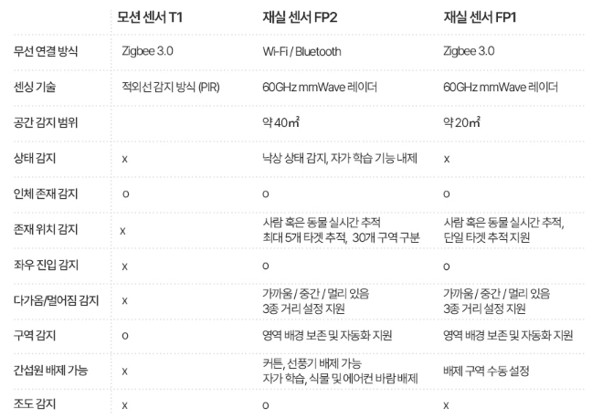

31 재실 센서 FP2
31.1 설치
질문 1: 재실 센서 FP2의 설치 방법을 알 수 있을까요?
답변 1:
재실 감지 센서 FP2의 설치 영상과 매뉴얼은 아래 링크를 클릭하시면 보실 수 있습니다.
질문 2: 재실 감지 센서 FP2의 측면 설치시와 천장 설치시 감지 범위가 어떻게 되는지요?
답변 2:
측면 설치시 넓은 범위 커버 및 위치 추적이 가능합니다. 감지 범위는 가로 6미터, 세로 8미터, 수평각 120도를 커버합니다. 반면에 천장 설치시에는 센서 바로 아래의 좁은 범위를 커버하고 낙상 감지가 가능합니다. 감지 범위는 높이 2.5미터~2.8미터, 반지를 2미터 원형, 그리고 수평각 120도 범위를 커버합니다.
31.2 사용팁
질문 1: 재실 센서 FP2은 아카라홈 또는 애플홈에 설치하기 위해 아카라 허브가 필요한 지요?
답변 1:
본 제품은 와이파이와 블루투스 내장형 제품으로 아카라 홈 또는 애플 홈에 설치하기 위해 별도의 허브는 필요 없습니다. 다만, 다양한 아카라 디바이스와의 연동씬을 구성하기 위해서는 허브가 필요합니다.
질문 2: FP2을 사용하면 구역을 나누어서 감지 할 수 있는지요?
답변 2:
재실 센서 FP2는 최대 30개의 모니터링 구역 설정을 할 수 있습니다. 만약 애플홈킷을 연동하여 사용하고 계시는 경우 모니터링 구역이 설정된 후 애플홈에 추가하면 자동으로 애플홈과 구역이름이 동기화 됩니다. 애플홈의 추가설정에서 이름 동기화를 실행하여 수동으로 구역 이름을 애플홈과 동기화 할 수도 있습니다.
질문 3: 밤에 잠들기 전 재실센서의 지시등이 눈에 거슬립니다. 일정 시간 동안 지시등을 끄는 방법이 있는지요?
답변 3:
네, 방법이 있습니다. FP2의 메인 화면에서 오른쪽 상단의 ‘…’클릭합니다. ’기기설정’ 에 들어 가시면 ’빛공해 방지 모드” 옵션이 있는데 이 옵션을 활성하시고 원하는 시간대를 설정하시면 됩니다.
질문 4: FP2의 주요 기능은 무엇이 있는지요?
답변 4:
FP2은 사람의 존재/부재, 넘어짐, 누군가 들어오는 것, 떠나는 것, 다가오는 것, 멀어지는 것 및 밝기를 감지할 수 있습니다. 여러대상에 대한 실시간 추적 및 30여개의 분리 감지 영역 설정을 지원합니다.
질문 5: FP2는 몇 명까지 감지 및 추적이 가능한지요?
답변 5:
본 재실 센서는 최대 5개의 대상을 추적할 수 있습니다. 그러나 3명 이하를 추적하는 경우에 최상의 결과를 얻을 수 있습니다.
질문 6: 감지 영역이란 무엇인지요?
답변 6:
감지 영역을 통해 사용자는 영역 자동화를 구성할 수 있습니다. 사용자는 소파, 욕실, 서재, 식탁 등을 설정하는 등의 더 나은 자동화 설정을 위해 제공된 320개 셀 중에서 선택할 수 있습니다. 설정된 영역은 자동화 조건에 추가됩니다. 최대 30개의 영역을 생성할 수 있습니다.
질문 7: 관리 구역을 설정할 때 스티커의 용도는 무엇인지요?
답변 7:
스티커는 사용자가 대상이 어디에 있는지 더 정확하게 파악할 수 있도록 참조용으로 사용됩니다. 스티커는 기기의 감지 성능에 영향을 미치지 않습니다.
질문 8: 간섭원, 출입구 및 가장자리 설정의 용도가 무엇인지요?
답변 8:
FP2는 움직이는 물체에 민감한 밀리미터파 기술을 적용합니다. 설정이 더 완벽할수록 감지 정확도가 높아집니다.
(1) 간섭원: 거실과 사무 공간에는 커튼, 선풍기, 바람에 흔들리는 식물, 옷걸이 등과 같은 움직이는 대상이 많습니다. 센서가 이러한 물체를 감지하면 잘못된 경보가 발생할 수 있으므로 간섭 원천으로 표시해야 합니다. 현재 간섭 원천 표시는 주로 작은 방출 신호를 가진 물체에 대해 이루어집니다. 예를 들어, 녹색 식물이나 물이 흐르는 소리 등이 있습니다.
(2) 가장자리: 가장자리 설정은 벽이나 다른 물체 반사 신호에 의한 잘못된 대상을 상쇄하는 데 주로 사용됩니다. 벽 바깥 영역도 가장자리로 설정하는 것이 좋습니다.
(3) 출입구: 대상 생성 및 삭제 속도를 가속화하여 사용자 경험을 향상시킬 수 있습니다.
질문 9: FP2의 버튼의 역할은 무엇인가요?
답변 9:
버튼은 초기화 용도로 사용합니다.
네트워크를 재설정하려면 10초 동안 누르고 있습니다.
공장 설정으로 복원하려면 빠르게 10번을 누릅니다.
질문 10: FP2는 로컬자동화를 지원하는지요?
답변 10:
예, 그러나 Wi-Fi 로컬 자동화를 지원하는 3.5.0 버전 이상의 허브가 필요합니다.
질문 11: 로컬 자동화를 위한 FP2와 아카라 허브의 적정 거리는 얼마인가요? 사이에 두꺼운 벽이 있어도 상관 없는지요?
답변 11:
가정 환경에서 FP2와 허브 사이의 권장 거리는 20미터를 초과하지 않아야 합니다. 그들 사이에는 벽이 두 개 이상 있어서는 안 됩니다.
질문 12: FP2의 설치 위치가 적절한지 어떻게 검증할 수 있나요?
답변 12:
(1) 바인딩이 성공적으로 완료되면, FP2 메인화면에 움직임이 사용자와 일치하는 작은 아이콘이 표시되면, 디바이스는 일반적으로 위치 데이터를 정상적으로 보고할 수 있습니다. (참고: 디바이스와 서버 간 통신으로 인해 디바이스 표시에는 지연이 발생할 수 있습니다.)
(2) 감지 영역을 떠난 후 30초 이내에 부재가 감지되면, 디바이스의 현재 설치 위치가 정상적으로 작동할 수 있음을 의미합니다. 응답이 빠를수록 간섭이 적고, 센서가 정확하게 감지하기 쉬워집니다. 부재 이벤트가 오랜 시간이 걸리거나 보고되지 않는 경우, 해당 공간에 일부 간섭이 있음을 의미합니다. 환경을 확인하고 디바이스를 구성하기 위해 다른 위치로 이동하십시오.
(3) 설치할 때, 잘못된 경보를 방지하기 위해 일정 기간 동안 움직이는 물체와 이동 물체를 피하십시오.
질문 13: FP2가 가끔 오프라인이 됩니다. 이유가 무엇인지요?
답변 13:
FP2가 Wi-Fi 라우터에서 너무 멀거나 그 사이에 금속 장애물이 있는 경우가 있습니다. 라우터에 더 가까이 이동하고 금속 장애물을 피해 보십시오. 참고: 더 나은 경험을 위해 디바이스 펌웨어를 적시에 업그레이드하여 호환성과 안정된 디바이스 간 통신을 보장하십시오.
질문 14: 감지 영역 기반을 두고 자동화를 설정하고 싶습니다. 어떻게 진행하면 되는지요?
답변 14:
영역을 설정한 후, 자동화 조건이 영역 감지를 추가하여 영역 자동화를 지원합니다. 예를 들어, 소파 영역을 설정하고, 소파 영역에 진입할 때 조명을 켜려면: 자동화 페이지의 오른쪽 상단에 있는 “+”를 클릭하고, FP2 > 영역 감지 > 영역 > “IF” 섹션에서 진입을 선택하고, “Then” 섹션에서 조명 > 조명을 선택하여 자동화 설정을 완료하십시오.
질문 15: 자동화 설정에서 “누군가가 다가오고 있어요” 조건은 언제 사용하나요?
답변 15:
사용자는 센서나 영역에 다가올 때 조명을 켜는 등의 자동화를 구성할 수 있습니다. 거리의 세 가지 수준은 각각 1미터, 2미터, 3미터를 나타냅니다. 설정한 후에는 해당 임계값으로부터의 거리에 따라 다가오는 이벤트가 발생하고, 가까운 거리에서 해당 임계값을 벗어나면 떠나는 이벤트가 발생합니다.
질문 16: 좌우 감지 모드와 기본 모드의 차이는 무엇인지요?
답변 16:
기본 모드는 감지 영역 내에서 존재를 감지할 수 있습니다. 좌우 감지 모드는 존의 양쪽에서 존재의 진입/이탈 방향을 감지하여 장면을 더 잘 구별할 수 있도록 도와줍니다. 예를 들어, 진입/이탈을 구별해야 하는 장면에서는 좌우 감지를 선택할 수 있습니다. 기본 모드는 기본 설정이며, 좌우 감지 모드는 전자보다 더 많은 데이터 전송을 필요로 합니다. 방향성 감지가 필요하지 않은 경우에는 기본 감지 모드를 켜는 것이 좋습니다.
질문 17: 애플홈킷과 연동하는 방법과 주의사항을 알려 주세요.
답변 17:
Apple “Home”에 FP2를 추가하려면, 휴대폰과 홈 허브(예: HomePod)가 동일한 로컬 네트워크에 연결되어 있는지 확인하십시오. 휴대폰은 2.4GHz WiFi 또는 혼합 주파수 WiFi(2.4GHz 및 5GHz를 모두 지원)에 연결되어야 합니다. “Home” 프롬프트에 따라 디바이스 뒷면의 HomeKit QR 코드를 스캔하여 네트워킹 및 디바이스 추가를 진행하십시오. 감지 영역 관련 설정은 아카라 홈 앱에서 이루어지며, HomeKit과 동기화될 수 있습니다.
주의 사항:
(1) Apple HomeKit 홈에 허브가 추가되지 않은 경우: FP2는 여전히 네트워킹 및 정상적으로 사용할 수 있지만, 로컬 제어가 불가능합니다.
(2) Apple HomeKit 홈에 허브가 추가된 경우: 네트워킹할 때, 휴대폰과 허브가 동일한 로컬 네트워크에 연결되어 있어야 합니다.
(3) FP2의 로컬 제어를 위해서는 FP2와 홈 허브가 동일한 로컬 네트워크에 있어야 합니다.
질문 18: FP2에서 구역 감지, 추락(낙상) 감지, 수면측정모드를 동시에 사용 가능한지요?
답변 18:
3가지 모드는 동시에 사용하실 수 없습니다. 사용자는 원하는 모드로 전환할 수 있으며, 각 모드에는 특정한 설정 방법이 있습니다. 모드 간에는 해당하는 가이드가 제공됩니다.
질문 19: 수면측정모드에서 적절한 감지 강도를 설정한 방법이 있는지요?
답변 19:
작동 원리는 존재 감지와 동일합니다. “부재” 알림을 잘못 받는 경우 감도를 높입니다. 침대를 떠날 때 알림을 받지 못하는 경우, 감도를 낮추십시오.
질문 20: 두사람의 수면측정도 가능한지요?
답변 20:
수면 모니터링은 개인 단위로 설계되었습니다. 두 명의 사람을 모니터링하는 경우, 별도의 FP2를 설치하고 각각에 대해 구분된 수면 영역을 설정하는 것이 좋습니다. 주변 물체가 여전히 수면 보고서에 영향을 줄 수 있음을 유의하십시오.
질문 21: 두꺼운 담요는 수면 측정의 정확도를 낮추는 역할을 하는지요?
답변 21
아니요. 밀리미터파 레이더는 숨쉬기와 같은 미묘한 신체 움직임을 감지할 수 있습니다. FP2의 AI 알고리즘을 사용하여 디바이스는 움직임, 심박수 및 기타 지표를 기반으로 수면을 지능적으로 평가합니다.
질문 22: FP2의 밀리미터파 레이더는 몸에 해롭지 않는지요?
답변 22:
밀리미터파 레이더는 스마트 홈 응용 프로그램에서 널리 사용되며, 인간 안전 기준에 준하는 주파수에서 작동합니다. FP2가 방출하는 복사선 수준은 유해한 임계치보다 훨씬 낮으며, 보통 일상적으로 사용되는 휴대전화의 방사선보다 안전하다고 여겨집니다.
질문 23: 같은 공간에 여러개의 FP2를 사용해도 간섭문제가 발생하지 않는지요?
답변 23:
같은 공간에 여러 개의 FP2를 배치하는 경우 일반적으로 서로 직접 맞닿아 있지 않으면 서로 간섭하지 않으며, 다양한 모드에서 동시에 작동할 수 있습니다.
질문 24: 모션 센서 T1, 재실 센서 FP1과 FP2의 구체적인 차이를 알려 주세요.
답변 24:
3종류의 장치는 다음과 같은 차이가 있습니다.

31.3 Troubleshoot
질문 1: 재실센서 FP2를 사용중입니다. 특정 공간에서만 고스트현상이 계속 발생합니다. 이 부분만 감지 못하게 하려면 설정을 어디에 해야 하나요?
답변 1:
특정 공간의 고스트 현상이 발생하는 경우 2가지 방법으로 해결 할 수 있습니다.
- 그리드 맵상의 아이콘을 길게 눌러 삭제하는 방법입니다.

- [관리구역]을 통해 간섭원을 만들어 해당 구역의 감지를 아예 차단하는 방법입니다.
질문 2: 애플 홈킷에 연결할 때 계속 실패하고 있습니다. 연결할 때 다양한 실패 메시지가 나오는데 어떻게 해결해야 하는지요?
답변 2:
에러 메시지 별도 다음과 같이 해결할 수 있습니다. 먼저 “액세서리 추가 실패” 메시지는 반복적인 추가 실패로 인해서 발생할 수 있으나, 이 경우 아이폰 또는 아이패드를 재 부팅해 주세요.
만약 “액서서리가 이미 존재합니다.”라는 메시지가 표시되는 경우 아이폰 또는 아이패의 HomeKit 설정코드를 수동으로 입력하여 추가해 주세요.
“액세서리를 찾을 수 없습니다” 라는 메시지가 표시되는 경우 재실 센서 FP2를 초가화 하고 3분 정도 기다리세요. 이후 HomeKit 설정 코드를 수동으로 입력하여 다시 시도해 주세요.
질문 3: 애플 홈킷과 연동 과정에서 Error Code 74가 계속 발생합니다. 어떻게 문제를 해결 할 수 있는지요?
답변 3:
만약 Apple HomeKit 홈 허브가 오프라인이거나 허브와 휴대폰이 동일한 로컬 네트워크에 없는 경우, 에러 코드 74가 표시됩니다. 휴대폰, FP2, 그리고 허브를 동일한 로컬 네트워크에 연결하세요.
질문 4: 현재 구역 감지의 정확도가 많이 떨어진 것 같습니다. 어떻게 설정하면 잘못된 알람, 고스트 현상 및 딜레이들 줄일 수 있는지요?
답변 4:
잘못된 감지를 줄이기 위해서 다음과 같은 설정을 변경해 보실 수 있습니다.
(1) 설치 위치: 유리, 거울, 금속, 물, 에어컨, 선풍기, 커튼과 같은 방해 요소가 없는 곳을 선택합니다. 이러한 간섭을 피할 수 없는 경우 FP2 모니터의 블라인드 스팟에 이러한 요소를 배치합니다.
(2) 장치 설치: 로고가 수평이 되도록 벽에 적절한 높이에 장치를 설치합니다. 이 장치는 수평으로 120도, 수직으로 20도의 감지 범위를 가리며, 최대 8미터까지 감지할 수 있습니다. 잘못된 설치 높이는 감지 오류와 잘못된 경보를 유발할 수 있습니다.
(3) 가장자리 설정: 최대 감지 영역을 정의하고 다른 영역은 가장자리로 설정합니다.
(4) 출입구 설정: 효율적인 대상 인식 및 제거를 위해 출입구를 올바르게 설정하는 것이 중요하며, 적시에 정확한 감지를 보장합니다.
(5) 간섭 설정: 에어컨, 선풍기 또는 움직이는 커튼과 같은 잠재적인 간섭이 있는 영역을 식별하고 표시합니다.
(6) 존재 모니터링 감도: 미묘한 움직임을 더 잘 감지하도록 감도를 조절하여 “존재” 상태의 활성화와 유지를 용이하게 합니다.
(7) 공간 지능 학습: 영역이 비어 있는 경우 “공간 지능 학습”을 수행하여 환경 및 배경 소음 간섭을 줄입니다.
(8) AI 인간 감지: 로봇 청소기 및 애완 동물과 같은 비인간적인 움직임으로 인한 잘못된 경보를 최소화하기 위해 필요할 때 이 기능을 활성화합니다.
(9) 잘못된 경보 관리: 간섭으로 인한 잘못된 경보의 경우, 대상을 제거하는 동안 이러한 요소를 고려하여 설정을 조정합니다.
질문 5: 수면측정모드의 정확도가 높지 않은 것 같습니다. 정확도를 높일 수 있는 방법이 있는지요?
답변 5:
수면 보고서의 정확도를 향상시키기 위해:
(1) 감시 영역의 정확한 위치를 세밀하게 조정합니다.
(2) 간섭을 최소화합니다. 에어컨, 선풍기, 커튼과 같은 장치는 레이더의 스캔을 방해할 수 있습니다. 이러한 장치를 멀리 떨어뜨리거나 꺼 두는 것이 좋습니다.
(3) 방이 “부재” 상태일 때 “AI 공간 학습”을 실행합니다. 이것은 감지 정확도를 향상시키는 데 도움이 됩니다.
(4) 모니터링 감도를 조정합니다: 높은 감도는 작은 움직임을 감지하지만 “부재” 이벤트를 놓칠 수 있습니다. 낮은 감도는 잘못된 경보를 최소화하지만 실제 움직임을 놓칠 수 있습니다.
(5) 수면 모니터링은 개인 감지를 위해 설계되었습니다. 공유 수면 환경의 경우, 모니터링 영역을 한 쪽으로 설정하여 간섭을 최소화하세요.
질문 6: 재실 감지 센서 FP2에서 고스트 현상이 빈번히 발생하고 있습니다. 그런데, 너무 불규칙적으로 발생하기 때문에 간섭 영역도 설정하기 어렵습니다. 어떻게 해야 하는지요?
답변 6:
재실 감지 센서 FP2의 각도를 조절해 가면서 고스트 현상 유무를 확인하시기 바랍니다. 감지 각도와 고스트 현상은 밀접한 관계가 있습니다.